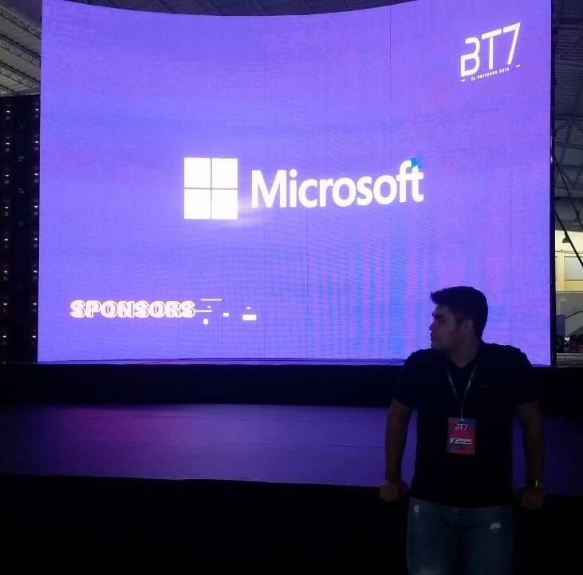

Sobre mí
"Tus clientes insatisfechos son tu mayor fuente de aprendizaje." - Bill Gates
¡Un gusto!
Soy Emiliano, un joven que gusta de los retos, apasionado ferviente del desarrollo web y la informática en general. Este es mi portafolio de proyectos Front-End, en donde actualizaré mis proyectos conforme realice mi curso formativo en Front-End Development y también mis primeros proyectos usando HTML, CSS, Jvascript y Bootstrap. Espero sean de tu agrado. ¡Un saludo!
Primeros proyectos
Un breve vistazo a mis comienzos.
Formulario de la NASA
Un formulario de HTML con propiedades CSS el cual pide tus datos siendo empleado de la NASA.
*Click sobre la imagen para ir al repositorio en GitHub.*
ToDo List
Un ToDo List dinámico usando HTML, CSS y Javascript, el cual puede agregar tareas y borrar tareas
con un click.
*Click sobre la imagen para ir al repositorio en GitHub.*
Calculadora de Propinas
Sitio web que permite calcular la propina dada el mesero en base al porcenataje a dar y el número de
clientes.
*Click sobre la imagen para ir al repositorio en GitHub.*
Papa John's
Página web promocionando productos del restaurante Papa John´s usando el framework Bootstrap.
*Click sobre la imagen para ir al repositorio en GitHub.*
Película Favorita
Proyecto de mi película favorita usando Bootstrap, CSS, con un formlario de pedido sobre una edición
especial en Blu-Ray sobre la película con PHP.
*Click sobre la imagen para ir al repositorio en GitHub.*